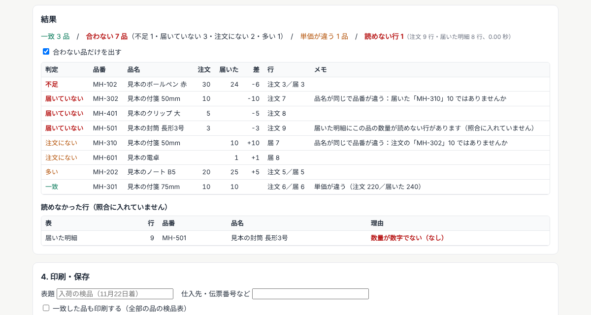

入荷の検品の照合
注文した明細（発注書・注文履歴）と、届いた品の明細（納品書・出荷明細、または届いた品を数えて入れた表）を品番か品名で突き合わせて、数の不足・多すぎ、届いていない品、注文にない品、単価の違いを一覧にするツールです。品数の多い入荷の検品で、納品書と発注書を1行ずつ見比べる手間を減らせます。ソフトのインストールは不要で、いつものブラウザで動きます。
お試し版はすべての機能を使えて、照合・印刷・保存はそれぞれの表の先頭15行までです。決済が終わると、そのまま製品版の画面に移動します。ブックマークしておけば何度でも使えます。

見本のデータ（架空の文具の注文と納品書）を照合した例。品名・数は説明用のもので、実在の商品・会社とは関係ありません。
こんなときに
- 何十品目もの入荷を、納品書と発注書を指でなぞって見比べている
- 分納や欠品があり、どの品がまだ届いていないかを仕入先に問い合わせたい
- 頼んでいない品が入っていないか、単価が注文と違っていないかも同時に確かめたい
- ネットショップの仕入れ・店舗の発注・事務用品の購入など、発注の記録が Excel や CSV で手元にある
できること
- 突き合わせ：品番で（品番が空欄の行は品名で）、または品番だけ・品名だけで突き合わせます。品番のハイフン・空白の違い（「AB-12」と「AB12」）、品名の全角・半角、大文字・小文字、空白、カッコの種類の違いは同じとみなします。Excel で先頭の0が消えた番号（「0123」と「123」）を同じとみなすこともできます
- 判定：品ごとに「一致」「不足」「多い」「届いていない」「注文にない」と差（届いた数−注文の数）を出し、不足・届いていない品から順に並べます
- 分納・まとめ書き：同じ品が注文や納品書に何行かあるときは、数を合計して比べ、その旨をメモに出します
- 書き違いの疑い：「届いていない品」と「注文にない品」で品名が同じもの・品番の書き方だけが違うものを、「〜ではありませんか」と組にして出します
- 単価・品名・単位の違い：単価の列があれば注文と納品書の単価の違いを、品番が同じで品名や単位が違うものもメモに出します
- 読めない行：数量が空欄・数字でない行（「なし」「未定」など）は、照合に入れずに一覧にします。「12個」「1,200」「３」のような書き方は数として読みます
- 印刷と保存：合わない品（または全部の品）の検品表を A4 で印刷できます（確認欄、検品日・検品者の記入欄つき）。結果は Excel ファイル（.xlsx）か CSV で保存でき、不足・届いていない品だけの CSV は問い合わせや追加の発注に使えます
- CSV（UTF-8・Shift_JIS）と Excel ファイル（.xlsx）を読めます。列は見出しから自動で選び、違っていたら画面で選び直せます。Excel の表をコピーして貼り付けても使えます
できないこと（購入前にご確認ください）
- 紙の納品書や PDF は読めません。CSV・Excel のデータか、届いた品を数えて入れた表が必要です（数えた数を Excel に入れて貼り付ければ使えます）
- ケースとバラ（「2ケース」と「24個」）のような単位の換算はしません。単位の列が違う品はメモに出すので、数をそろえてから照合してください
- 品名が大きく違う（略称・別の呼び名）品は、同じ品とみなせません。品番がある場合は品番で突き合わせてください
- 届いた品が良品かどうか（傷・賞味期限など）の判断はしません。数と単価の照合までです
- 仕入先への連絡・発注の送信の機能はありません
- スマートフォンでは操作しにくいため、パソコンでお使いください
Excel だけで照合するなら
注文のシートを「注文」、納品書のシートを「納品」とし、どちらも A 列に品番、C 列に数量があるとき、「注文」の D2 に
=SUMIF(納品!$A:$A,A2,納品!$C:$C)
と入れると、その品番の届いた数の合計が出ます。E2 に =D2-SUMIF($A:$A,A2,$C:$C) と入れると「届いた数−注文の数」になり、マイナスは不足、0 は一致です（D2 が 0 なら届いていません）。注文にない品は、「納品」の D2 に =COUNTIF(注文!$A:$A,A2) と入れて 0 の行です。式を下までコピーして、フィルターで絞り込んでください。
このツールが向いているのは、品番の書き方（ハイフンの有無・先頭の0）が注文と納品書で違う、品番のない品を品名で突き合わせたい、単価の違いや書き違いの疑いもまとめて見たい、検品表をそのまま印刷したい、といった式だけでは手間のかかるときです。
よくある質問
| データはどこかに送られますか？ | 送られません。読み込み・照合・印刷・保存はすべてお使いのブラウザの中で行います。表題などの一部の設定だけをブラウザに保存し、表の中身は保存しません。 |
|---|---|
| 注文と納品書で列の並びや見出しが違っても使えますか？ | 使えます。それぞれの表で、品番・品名・数量・単価の列を見出しから自動で選び、画面で選び直せます。数量の列は「発注数」「納品数」「数量」などの見出しで見つけます。 |
| 何回かに分けて届いた品はどうなりますか？ | 届いた明細を1つの表にまとめて入れれば、品ごとに合計して比べます。2回目の納品書だけを入れると、まだ届いていない分は「不足」と出ます。 |
| 何行まで使えますか？ | 製品版は行数の制限はありません。画面の一覧は500品まで表示し、全部は保存したファイルに入ります。 |
安心してお使いいただくために
- 表はお使いのブラウザの中だけで処理し、サーバーには送信しません
- 動作環境：最新版の Chrome・Safari・Edge・Firefox（パソコン）
- 説明どおりに動かない場合は、ご購入から7日以内にご連絡いただければ返金します
在庫の表から発注する品と数を出して発注書を作るなら 発注点チェックと発注書、棚卸の記入用シートは 棚卸の記入用シート印刷、品番が JAN なら番号の誤りを 商品コードの検査 で調べられます。